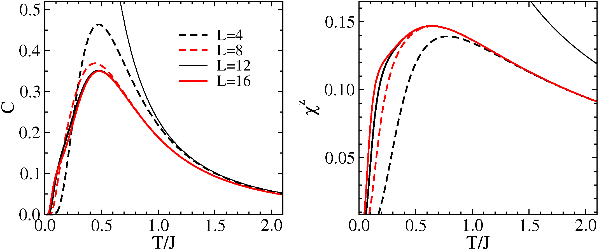

Finite-temperature properties of the S=1/2 Heisenberg chain
(using semi-momentum states and spin-inversion symmetry; data from program hchain_mkpz)
The program produces data as a function of temperature for a number of equally spaced temperatures as input by the user. A data file with energy/spin eigenvalues previously generated by the program hchain_mkpz must be present in the directory from which the program is executed.
Input:
From the keyboard:
- System size N (integer)
- Number of temperatures Nt (integer), temperature spacing dt (float)
From a file eig.dat:
- eigenvalues generated by the program hchain_mkpz (for the system size N):
Output:
In a file t.dat, expectation values for nt temperatures Ti=i*dt:
Column 1: temperature Ti
Column 2: internal energy E(Ti) per spin
Column 2: specific heat C(Ti) per spin
Column 2: susceptibility X(Ti) per spin
To the display:
- Non-diagonal total spin occurrences are listed.
Running the program for N=16, the following occurrences of non-diagonal total spin are displayed on the screen:
k,p,z : 8 1 1 E, S : 2.00000000 5.95115995 k,p,z : 8 1 1 E, S : 2.00000000 5.23103923 k,p,z : 8 1 1 E, S : 2.00000000 5.63463737 k,p,z : 8 1 1 E, S : 2.00000000 5.40795641
The incorrect (in principle) treatment of these eigenvalues causes no errors in practice, because the energy is very high and the instances are very few (4 in this case). The following shows the output in the file t.dat after running the program for N=16, Nt=20, dt=0.05:
0.050000000 -0.446163976 0.024868600 0.011118151
0.100000000 -0.442896785 0.097897824 0.073202301
0.150000000 -0.437002203 0.135954485 0.105906221
0.200000000 -0.429245887 0.175964396 0.117932328
0.250000000 -0.419261393 0.224188693 0.124278789
0.300000000 -0.406837803 0.271822096 0.129372280
0.350000000 -0.392233967 0.310337686 0.134012907
0.400000000 -0.376024379 0.335764119 0.138121101
0.450000000 -0.358878614 0.347995890 0.141510948
0.500000000 -0.341411396 0.349053080 0.144072677
0.550000000 -0.324113647 0.341685191 0.145788490
0.600000000 -0.307338592 0.328558624 0.146707249
0.650000000 -0.291316392 0.311897456 0.146915724
0.700000000 -0.276179262 0.293394979 0.146516454
0.750000000 -0.261987260 0.274257355 0.145613339
0.800000000 -0.248750431 0.255295579 0.144303420
0.850000000 -0.236446103 0.237022727 0.142672927
0.900000000 -0.225031603 0.219738370 0.140795994
0.950000000 -0.214453195 0.203595033 0.138734902
1.000000000 -0.204652134 0.188647571 0.136541092
The figures shows results for the specific heat and the susceptibility for N=4,8,12,16:
Here the thin diverging curves show the leading high-temperature behaviors.